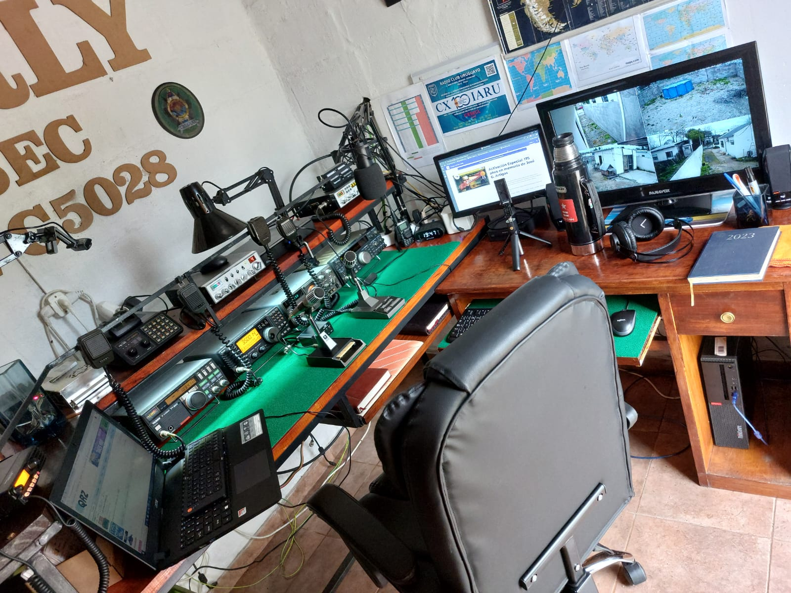
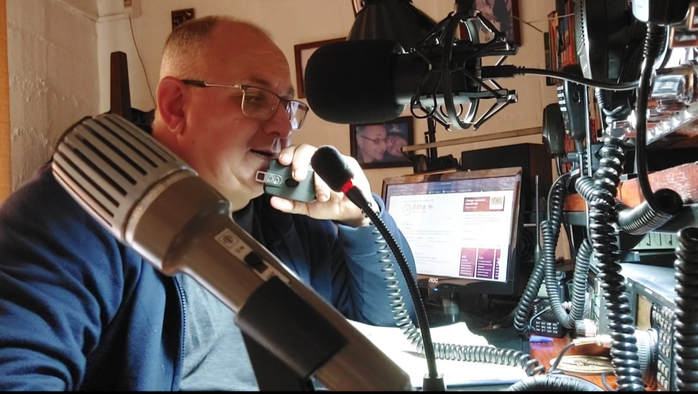
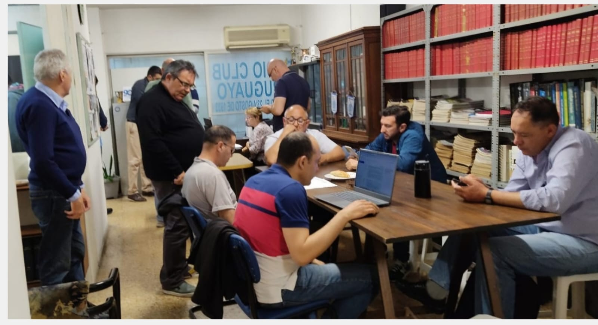
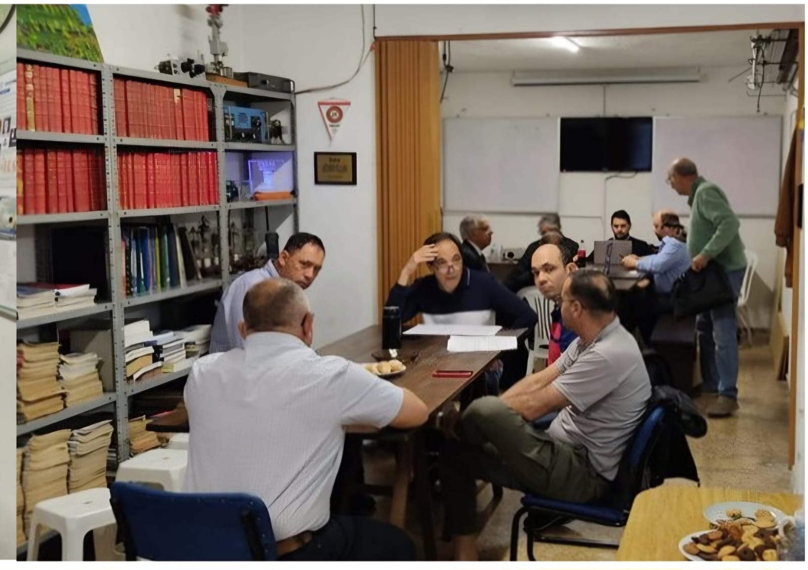
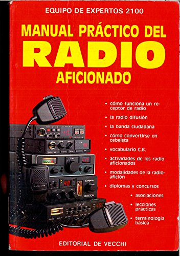
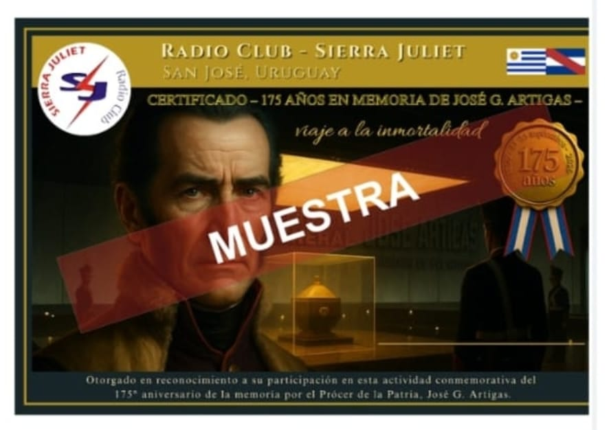

33° aniversario del Radio Club Sierra Juliet
33° Aniversario del Radio Club Sierra Juliet
El pasado 12 de octubre, el Radio Club Sierra Juliet celebró con orgullo sus 33 años de trayectoria en el mundo de la radioafición. Para conmemorar este hito, se llevó a cabo una activación especial los días 11 y 12 de octubre, donde la Estación Charly tuvo el honor de participar activamente.
Durante el evento, se registró una participación excepcional de 836 estaciones provenientes de diversos países, reflejando el alcance y la fraternidad que caracteriza a nuestra comunidad radial.
La activación contó con el compromiso de once operadores colaboradores de Uruguay y Argentina, quienes aportaron su tiempo, energía y profesionalismo para hacer de esta celebración un verdadero éxito. Tal como se informó en el post anterior de este blog, su labor fue clave para lograr una operación fluida y representativa.
Desde Estación Charly, agradecemos profundamente a todos los colegas que se sumaron a esta iniciativa, fortaleciendo los lazos institucionales y celebrando juntos el legado de Sierra Juliet. ¡Seguimos transmitiendo historia!
¡Gracias por ser parte de esta celebración! Nos reencontramos en la próxima activación.
Estación Charly en acción
Durante la activación por el 33° aniversario del Radio Club Sierra Juliet, la Estación Charly operó desde una plataforma técnica de alto nivel, equipada para garantizar comunicaciones claras, seguras y eficientes.
La imagen a continuación muestra el entorno de trabajo: múltiples monitores, dispositivos de comunicación, mapas, certificados y herramientas de precisión que reflejan el compromiso y la pasión por la radioafición. Cada componente está dispuesto con criterio técnico y respeto por la prolijidad institucional.

Estación Charly durante la activación conmemorativa – Octubre 2025
Reconocimiento institucional
Como parte de la celebración por el 33° aniversario del Radio Club Sierra Juliet, se otorgó un certificado de reconocimiento a cada estación colaboradora que participó activamente en la activación conmemorativa.
Sierra Juiet entrega reconocimiento 33 años
Texto del tema...
La Estación Charly recibió con orgullo su certificado, reflejo del compromiso, la prolijidad operativa y el espíritu institucional que guió su participación durante los días 11 y 12 de octubre.

Certificado entregado por Sierra Juliet – Octubre 2025
Certificados disponibles
Los QSOs deben realizarse exclusivamente el 11 y 12 de octubre de 2025 en las bandas 40m y 10m, modo SSB. La confirmación se realiza mediante envío de log.
Estaciones válidas para esta activación:
CX1ESJ, CX5EC, CX6EC, CX1ERA, CX4DPG, CX1AZ, CX3HU, CX5ANA, CX5ACG, LW6ERY, LU3EZH, LU2HDT.
Activación en las Sierras de Mahoma – 18 de enero de 2025
Activación Sierras de Mahoma
A mediados del año 2024, en una de las reuniones quincenales del Radio Club Sierra Juliet, del cual soy parte, decidimos realizar una activación de radio en las Sierras de Mahoma. Este lugar está ubicado en el km 125 de la ruta N°23, en el departamento de San José, y es conocido por su paisaje único, también llamado "Mar de piedra".
En las posteriores reuniones fuimos afinando detalles y fijamos como fecha del evento el sábado 18 de enero del 2025. La Junta de San José declaró de Interés Departamental la actividad, lo que nos permitió recibir el apoyo de la Intendencia.
Difundimos la propuesta en redes y medios de prensa, asistimos a programas de radio y televisión para contar en qué consiste y cómo se lleva a cabo una activación.

Cobertura en Canal 9 – Difusión previa

Equipo operativo – Jornada de activación
Llegó ese día. Salimos temprano: José, Bruno, Daniel, Víctor, Hugo y yo. Cargamos los equipos, antenas, batería, generador de corriente, entre otros elementos fundamentales.
Fue un día para no olvidar: camaradería, radio y naturaleza. Agradecimiento a todos por este gran momento radial. ¡La pasamos genial! Exploramos las capacidades de nuestras estaciones portátiles, fortalecimos la unidad operativa y disfrutamos del aire libre en uno de los paisajes más característicos de la región.
Activación Binacional – Jura de la Constitución Uruguaya 2025
Activación Jura de la Constitución
Los días 19 y 20 de julio, el Radio Club Sierra Juliet de San José de Mayo fue el escenario de una destacada activación conjunta entre operadores y colaboradores uruguayos y argentinos, realizada con motivo de un nuevo aniversario de la Jura de la Constitución Uruguaya, celebrada por primera vez el 18 de julio de 1830.

Activación radial conmemorativa – Jura de la Constitución CX5EC.
Validamos el legado, fortalecemos la comunidad.
¡702 contactos realizados! Certificados para los operadores con al menos tres enlaces.
A través de esta experiencia, se lograron estrechar lazos entre radioaficionados de ambos países, compartiendo prácticas operativas, conocimientos técnicos y una profunda vocación por la radiocomunicación. Las transmisiones se realizaron en banda de 40 metros, despertando el interés de colegas de diversas regiones.
Más que un ejercicio técnico, esta activación fue una celebración del espíritu democrático y de la fraternidad entre naciones, honrando una fecha clave en la historia uruguaya. El Radio Club Sierra Juliet agradece profundamente la participación y el compromiso de todos quienes hicieron posible este evento, reafirmando la radioafición como un puente entre culturas y generaciones.
La estación Charly CX5EC participó activamente como operador colaborador en esta actividad.

Estación Charly CX5EC – Activación binacional

Celebración institucional – 18 de julio

92° Aniversario del Radio Club Uruguayo
Hoy 23 de agosto en el marco del Día del Radioaficionado Uruguayo, celebramos con orgullo los 92 años de trayectoria del Radio Club Uruguayo, institución pionera que ha sido faro y motor del movimiento radial nacional desde 1933.
Desde Estación Charly – CX5EC, saludamos a todos los colegas que mantienen viva la pasión por el espectro, la comunicación libre y el servicio comunitario. Honramos el legado de quienes nos precedieron y renovamos el compromiso de seguir construyendo historia, identidad y comunidad.
San José de Mayo, agosto de 2025
Instancia de Exámenes en el RCU
Compartimos dos momentos que reflejan el compromiso formativo del Radio Club Uruguayo, donde nuevos aspirantes y colegas para ascenso de categoría se suman al movimiento con vocación y entusiasmo.


MUY FELIZ DÍA RADIOAFICIONADOS URUGUAYOS 73!!!
Lectura en Frecuencia – CX5EC
Lectura en Frecuencia – CX5EC

Lectura en Frecuencia
San José celebra la palabra en todas sus formas
Desde Estación Charly – CX5EC celebramos la lectura como forma de transmisión. Porque leer también es estar en frecuencia: con la historia, con la comunidad, con la memoria.
Durante la Feria de Promoción de la Lectura y el libro del 9 al 14 de setiembre en San José de Mayo, reafirmamos que la radioafición no solo comunica: también documenta, educa y preserva. Nuestros comunicados, bitácoras y relatos de activación son parte de un legado escrito que se transmite por voz, por señal y por convicción.
En jornadas como “A Toda Radio”, CX5EC participó como operador institucional, validando contenidos y fortaleciendo vínculos. Cada contacto fue una página más en el libro colectivo de la radioafición uruguaya.
Porque cuando todo se apaga, la radio sigue contando historias. Y cuando leemos, también nos activamos.
Publicado por CX5EC – San José de Mayo, agosto 2025
“Viaje a la Inmortalidad”
Activación Artigas – Estación Charly

Activación Especial – Estación Charly CX5EC
175 años en memoria de José G. Artigas
Viaje a la inmortalidad
Desde el sábado 20 de septiembre a las 00:00 UTC hasta el domingo 21 a las 23:59 UTC, el Radio Club Sierra Juliet realizará una activación conmemorativa en las bandas de 40 y 10 metros.
Quienes logren contacto con al menos 3 estaciones colaboradoras, recibirán un certificado especial.
La actividad honra la memoria de nuestro prócer el General José Artigas que luchó por la libertad de los orientales.
Estaciones colaboradoras:
CX1AZ CX1ERA CX3HU CX5EC CX6EC CX5TMJ LU2HDT LU3EZH LW6ERY
Las bases y condiciones estarán disponibles en la web del Radio Club Sierra Juliet una vez finalizada la actividad:
sierrajulietdx/inicio
Jornadas “A Toda Radio” – Activación Colaboración CX5EC
01 de junio de 2025, Estación Charly – CX5EC participó como operador colaborador institucional en la doble jornada “A Toda Radio”, organizada por el Radio Club Sierra Juliet en San José de Mayo.
Durante la jornada, se compartieron prácticas operativas, se fortalecieron los vínculos entre colegas y se celebró la radioafición como herramienta de unión, memoria y vocación técnica. CX5EC aportó desde su estética táctica institucional, validando contenidos, apoyando la difusión y operando en frecuencia junto a colegas de todo el país y de la región.
Esta colaboración reafirma el compromiso de Estación Charly con la comunidad radial y con el legado que nos une en cada activación, concurso y jornada de encuentro. Una excelente jornada de activacion
Registro audiovisual – CX5EC en frecuencia
Compartimos un registro visual de la participación de Estación Charly en la jornada “A Toda Radio”, junto al Radio Club Sierra Juliet. Sin dudas una hermosa jornada de radio y de aprendizaje
Entorno operativo CX5EC
Incorporamos video que refleja el entorno de Estación Charly durante las jornadas. Este registro complementa la narrativa visual institucional, fortaleciendo la memoria colectiva de la activación.
ACTIVACIONES vs CONCURSOS: Estrategia y Pasión en el Aire
En el universo de los radioaficionados, hay dos eventos que elevan el nivel de adrenalina y conexión global: las activaciones y los concursos. Aunque ambos implican operar con máxima eficiencia, sus objetivos y tácticas varían. Acá te los explico al estilo Estación Charly.
¿Qué es una Activación?
Transmitir desde un sitio de interés especial para otorgarlo como “punto válido” a otras estaciones.
- Ubicaciones: parques, faros, cumbres, reservas, etc.
- Programas populares:
- POTA – Parks on the Air
- SOTA – Summits on the Air
- Lighthouses on the Air
- Objetivo: compartir ubicaciones únicas, no solo contactos.
Checklist básico:
- Equipo portátil: transceptor, antena, energía
- Registro en programa correspondiente
- Bitácora (digital o física)
- Logística, seguridad y permisos
¿Qué es un Concurso?
Competencia de tiempo limitado para realizar la mayor cantidad de QSOs posibles bajo reglas específicas.
- Ejemplos: CQ WW, ARRL DX, IARU HF
- Categorías: mono/multi operador, modos (SSB, CW, digital), potencia
- Herramientas clave: software de log (N1MM, DXLog), monitoreo de propagación, planificación táctica
Diferencias Clave
| Característica |
Activación |
Concurso |
| Lugar |
Ubicación específica |
Cualquier estación habilitada |
| Duración |
Flexible |
Tiempo reglado |
| Objetivo |
Difundir ubicación |
Acumular QSOs y puntos |
| Estilo |
Aventura operativa |
Competencia intensa |
| Log |
Datos de lugar y operación |
Registro detallado de QSOs |
ENTENDIENDO LA PROPAGACION EN HF: El Arte de Dominar las Ondas
Cuando activamos el equipo y lanzamos una señal al éter, la magia (o más bien la ciencia) detrás de llegar a destinos remotos se llama propagación. En este artículo te comparto lo esencial para operar con inteligencia táctica y aprovechar al máximo cada banda.
¿Qué es la propagación?
- Frecuencia de operación (HF, VHF, UHF)
- Condiciones solares (manchas solares, flujo solar)
- Hora del día y estaciones del año
- Ubicación geográfica
Tipos de propagación en HF
- Ionosférica (F y E): Ideal para contactos DX.
- Esporádica-E: Útil especialmente en 6 y 10 metros.
- Dispersión troposférica: Más común en VHF/UHF.
- Propagación NVIS: Cobertura regional efectiva.
Herramientas de monitoreo
Tácticas de operador
- Frecuencias por horario: mañana = bandas altas (15/12/10m), tarde/noche = bandas bajas (40/80m)
- Escucha antes de transmitir: balizas y escaneo.
- Bitácora de propagación: anotar condiciones, bandas y estaciones.
Jornadas “A Toda Radio” – Activación CX5EC
Ficha Táctica - Estación Charly
Comparativa de Antenas
| Tipo |
Ventajas |
Balun |
Ideal para |
| Dipolo |
Simple, buena ganancia |
1:1 |
Estación base HF |
| Vertical |
Poco espacio, buen DX |
Opcional |
Portable táctica |
| Yagi |
Alta directividad |
Diseño específico |
Concursos y caza de DX |
| Loop |
Recepción limpia |
4:1 |
Ambiente urbano |
Funciones del Balun
- Elimina corriente de retorno en coaxial
- Mejora patrón de radiación
- Minimiza interferencias
- Recomendado: 1:1 para dipolo, 4:1 para loop
Operación táctica recomendada
- Vertical plegable para campo
- Dipolo con balun para base
- Yagi para concursos
Consejo CX5EC: “Un buen balun convierte ruido en disciplina. Transmití como si fueras parte de una formación táctica.”
Mapa de Prefijos CX5EC
Zonas, Divisiones y Prefijos
üåé Zonas CQ / ITU
- CQ Zona 13 - Sudamérica Sur
- ITU Zona 14 - Uruguay, Sur de Brasil
- ITU Zona 12 - Argentina Norte
- CQ Zona 12 - Chile, Perú
Prefijos por país
| País |
Prefijos |
Notas Operativas |
| Uruguay |
CX |
Subdivisión por departamentos (CX1-CX9) |
| Argentina |
LU / LW |
Zonas regionales 1 a 9 |
| Brasil |
PY / PP / PQ |
Área geográfica definida (PR, SP, RJ) |
| Chile |
CE / CA |
Zonas norte, centro y sur |
Uso Estratégico
- Identificá zona por prefijo en concursos
- Usá CQ y ITU para segmentar DX
- Registrá contactos por zona en tu bitácora táctica
Cuando todo se apagó, la radio quedó en frecuencia
CUANDO TODO SE APAGÓ LA RADIO SIGUIÓ EN FRECUENCIA
Publicado por CX5EC-CVC5028 – Estación Charly
El 28 de abril de 2025, un apagón dejó sin energía eléctrica a España, Portugal, Andorra y parte del sur de Francia. El sistema cayó en segundos: trenes detenidos, hospitales en modo emergencia, redes móviles fuera de servicio. Solo quedó algo operativo… la radio.
La radio como salvavidas táctico
- La Cadena SER y otras emisoras mantuvieron boletines de emergencia gracias a generadores.
- Personas se reunieron en balcones y autos con radios portátiles para recibir información.
Los radioaficionados en frecuencia
- La red REMER se activó con más de 3.000 voluntarios.
- Se mantuvieron enlaces operativos entre zonas aisladas y autoridades locales.
- Los contactos se realizaron en HF, VHF y bandas tácticas con protocolos de emergencia.
CX5EC – Reflexión desde Estación Charly
Este evento demostró que cuando falla la infraestructura moderna, la radioafición resiste. Con disciplina, autonomía y propósito, el espectro queda vivo gracias a quienes lo habitan con pasión táctica. Estación Charly reafirma su misión: estar en frecuencia cuando los sistemas se caen.
“Porque cuando todo se apaga… quedamos nosotros.”
Cuando el agua lo cubre todo, la radio permanece
CUANDO HAY INUNDACIONES LA RADIO ESTA PRESENTE
Publicado por CX5EC-CVC5028 – Estación Charly
En marzo de 2025, intensas lluvias azotaron varias regiones de Argentina, provocando inundaciones urbanas en Bahía Blanca, La Plata y el conurbano bonaerense. Las calles se convirtieron en ríos, los servicios colapsaron y miles de personas fueron evacuadas. Pero en medio del caos, una señal se mantuvo firme: la radioafición.
Estaciones activas en emergencia
- El Radioclub La Plata (LU8DZE) activó tres repetidoras VHF/UHF y un nodo Echolink para mantener comunicación local.
- El SERA (Servicio de Emergencia – Radioaficionados de Argentina) coordinó enlaces entre zonas afectadas y centros logísticos.
- Estaciones en bandas de 40 metros operaron como control de tráfico, guiando camiones con ayuda humanitaria.
¿Por qué la radioafición es vital?
- Funciona sin infraestructura comercial: no depende de internet ni redes móviles.
- Opera con energía alternativa: baterías, paneles solares, generadores.
- Permite comunicación directa entre operadores, sin intermediarios.
- Es rápida, confiable y entrenada para situaciones críticas.
Reflexión desde Estación Charly
Las inundaciones en Argentina demostraron que cuando todo falla, los radioaficionados entran en frecuencia. No solo transmiten señales: transmiten calma, coordinación y esperanza. Desde CX5EC, reafirmamos el rol táctico de la radio como herramienta de resiliencia.
“La radio permanece vigente.”